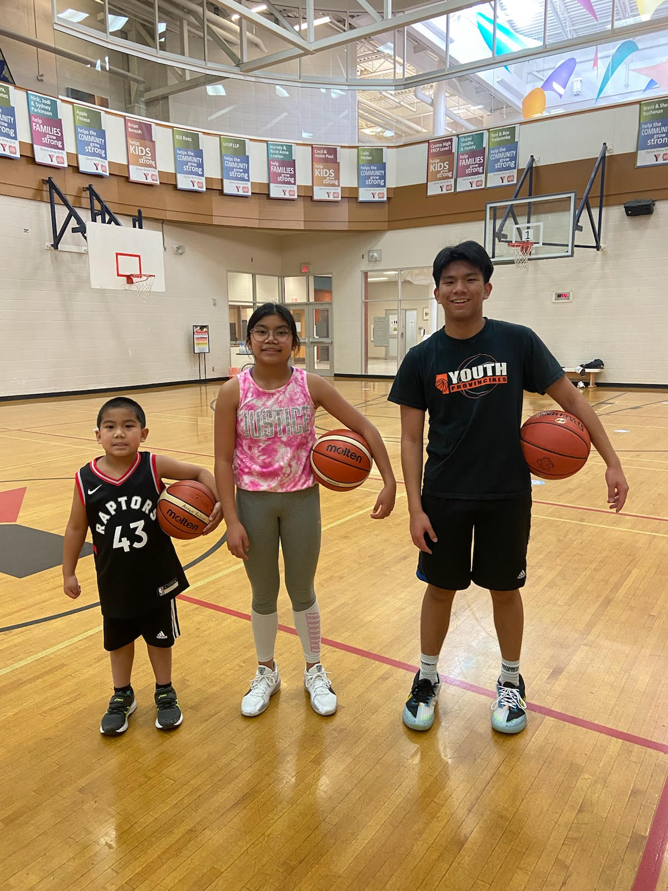

Squeak. Squeak.
The sound of my sister wiping her shoes before stepping onto the court. Her sneakers squeak softly, nearly drowned out by the bounce of the ball and the roar of the crowd. She’s undersized. She’s Filipino. She’s chasing a dream in a game that doesn’t forgive girls like her for being small.
But still, she walks.
Image of our family basketball dynasty :)
She walks anyway, because her story isn’t about fitting into the mold. It’s about breaking it. Every step she takes on that court is an act of resistance. Every step carries the weight of her future dreams and her own rising success. But each step also carries self-doubt, the sting of discouraging comments, and the burden of being overlooked. For her size, for her gender, for who she is in today’s world. All her relentless hard work, never seen, never praised.
Her steps remind me of the young Métis girls and women who never got to take theirs. The lives of these young leaders were stolen. Viciously, brutally, and far too soon. Unlike my sister, these girls will never be given the opportunity to chase their dreams. The beautiful story they could have curated themselves had their curtains closed before they could even share.
To honour each of their short-lived stories, over 1,800 moccasin vamps were created through Walking With Our Sisters. This project’s mission was to showcase hundreds of unfinished moccasins to represent the story of each girl that never got to fully take place. Like the moccasins, these girls’ stories were never finished, but the vamps' creativity and uniqueness remind us of the stories these girls were able to create with their short time.
Keeptwo, Suzanne. 2016. "Unfinished moccasins commemorate murdered and missing indigenous women." Anishinabek News, January 18, 2016. https://anishinabeknews.ca/2016/01/18/unfinished-moccasins-commemorate-murdered-and-missing-indigenous-women/
Their incomplete shoes will never get to hold the same weight as my sister’s shoes, but this doesn’t make them any less beautiful. If anything, it shows that an unfinished story can still be beautiful. Yet it’s truly a shame and a disgrace to never let these individuals flourish.
Métis women today still face struggles that inhibit them from flourishing. “Connected by economic, social and political marginalization, racism, and misogyny woven into the fabric of Canadian society,” Maron Bueller says. The current framework of our society is built on unfair viewpoints on age, gender, culture, social values. These core things affect the young Métis dreamers in our society today. “Health is greater than just physical health, and often determined or impacted by social, political and economic influences.” (Métis Centre 2008, 3). To chase a dream is hard, but to chase a dream even those deeply rooted in the very foundations of our society, built to slow you down, is not only difficult, it is scary. To think of the toll it can take on a young Métis girl’s mind to fight against society just to achieve what you believe is right.
And yet, they continue to walk forward, one step at a time.
Every step forward, every story shared, is part of something bigger. In Métis culture, it is called Keeoukaywin, which means “way of visiting.” When one of these girls wins, no matter how small, it is a collective win. As each victory is shared, we not only share stories and keep things in memory, but it can be much deeper.
It inspires another girl to take her step forward, no matter how scary.
Keeoukaywin is sacred, and it can bring about the change we need for young Métis women. “Women are sacred… Now is the time of the sacred feminine” (Menard, Andrea, 2018 March 3, 2:18 - 2:32). Women can come together, to empower each other to move forward, step by step. Adding onto the momentum and weight of each step, as the thundering step under each one of these girls will be heard all around the world, bringing about change. So that stories of hundreds of girls aren’t represented through creating moccasin vamps, but rather their victories and success will be shared throughout the world.
Image of my sister winning city championships
For a long time, this land was called Terra Nullius, which means “nobody’s land.” But no land is empty, no place should be untouched. No ground should be unwalked. So through Keeoukaywin let us not only share stories, but rather empower and inspire each other to walk the steps that many before couldn't take. Let us do right by them.
One step at a time.
Off note: This is the final post for my class! So I hope you enjoyed reading it, because I sure did enjoy writing them! Wishing my professor and TA well! thank you for the amazing semester üòä